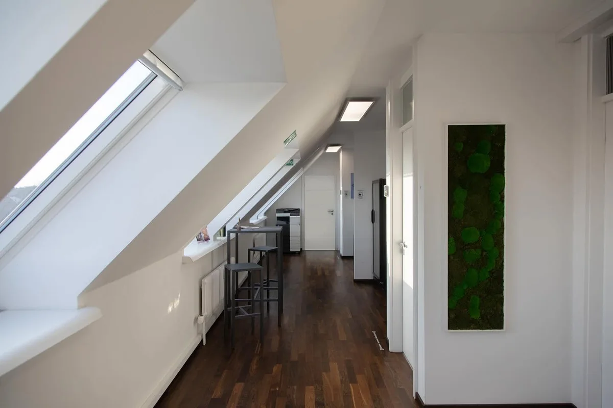
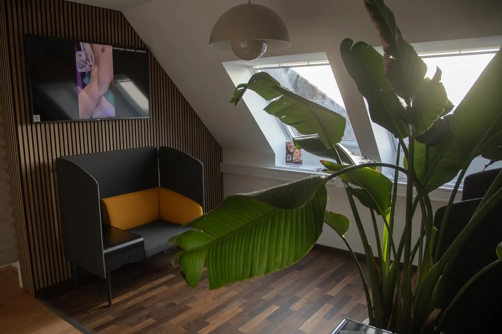

Ästhetische Dermatochirurgie · Chemnitz
Ästhetische Operationenmit ruhiger Hand.
Manche Hautveränderungen sind medizinisch harmlos und stören trotzdem jeden Tag im Spiegel. Wir entfernen und korrigieren sie fachärztlich, ambulant und mit einer Schnittführung, die auf ein möglichst unauffälliges Ergebnis ausgelegt ist.

Was wir ästhetisch korrigieren
Ob ein Eingriff sinnvoll ist, entscheiden wir immer erst nach der Untersuchung. Diese Anliegen begegnen uns am häufigsten:
-
Störende HautveränderungenGesicht, Hals & Dekolleté
Weiche Fibrome, Stielwarzen, Talgdrüsenwucherungen oder erhabene Alterswarzen – kleine Befunde, die beim Rasieren, am Kragen oder einfach optisch stören. Je nach Befund entfernen wir sie mit dem Skalpell, der Kürette oder in Kombination mit dem Laser.
-
XanthelasmenGelbliche Ablagerungen am Lid
Die flachen, gelblichen Plaques am Ober- oder Unterlid sind harmlos, fallen aber auf. Wir tragen sie – abhängig von Größe und Lage – operativ ab und besprechen vorab, ob eine Abklärung der Blutfettwerte sinnvoll ist.
-
Muttermale aus ästhetischen GründenMit feingeweblicher Untersuchung
Auch unauffällige Muttermale dürfen weg, wenn sie stören. Jedes entfernte Mal geht zur Sicherheit ins Labor. Mehr zur medizinischen Seite lesen Sie unter Muttermal entfernen.
-
NarbenkorrekturBreite, eingezogene oder wulstige Narben
Eine auffällige Narbe lässt sich oft verbessern: durch Ausschneiden und feine Neuvernähung, durch Laser oder durch eine Kombination beider Verfahren. Ganz verschwinden lässt sich eine Narbe nicht, unauffälliger werden kann sie häufig schon.
-
Zysten & LipomeTalgzysten (Atherome), Fettgewebsknoten
Tastbare Knoten unter der Haut entfernen wir vollständig mitsamt Kapsel, damit sie möglichst nicht wiederkommen. Der Schnitt wird so klein wie möglich gehalten und so gelegt, dass er später kaum auffällt.
Ästhetik beginnt mit der Diagnose
Erst sicher, dann schön
Bevor wir über Optik sprechen, schauen wir mit dem Auflichtmikroskop genau hin. Was entfernt wird, geht zur Kontrolle ins Labor – auch wenn es harmlos aussieht.
Der Schnitt folgt der Haut
Wir planen jede Schnittführung entlang der natürlichen Spannungslinien und nähen mit feinem Material. So hat die Narbe die besten Voraussetzungen, unauffällig zu verheilen.
Ehrlich beraten
Nicht jeder Befund muss operiert werden, manchmal ist der Laser die bessere Wahl. Und wenn ein Eingriff in eine plastisch-chirurgische Klinik gehört, sagen wir Ihnen das offen.
Vom ersten Gespräch bis zur Kontrolle
- Schritt 1BeratungWir untersuchen den Befund, hören Ihnen zu und sagen Ihnen ehrlich, was möglich ist.
- Schritt 2PlanungVerfahren, Schnittführung, Kosten und Termin – alles transparent, bevor etwas passiert.
- Schritt 3EingriffIn örtlicher Betäubung, meist 20 bis 60 Minuten. Danach gehen Sie selbstständig nach Hause.
- Schritt 4NachsorgeWundkontrolle und Fadenzug nach etwa fünf bis vierzehn Tagen, je nach Körperstelle.
- Schritt 5Befund & KontrolleWir besprechen das Laborergebnis mit Ihnen und schauen uns die Narbe später noch einmal an.
„Ein gutes ästhetisches Ergebnis sieht man nicht. Man sieht nur, dass etwas fehlt, das gestört hat.“Dermatologisches Laserzentrum Häusler-Mehlhorn
Ruhig, hell und ohne Klinikgefühl
Unsere Praxis liegt im Dachgeschoss der Leipziger Straße 137. Eingriffe finden in einem eigenen Behandlungsraum statt – ohne Wartezimmer-Hektik, mit Zeit für Ihre Fragen vorher und nachher.

Ästhetische Operationen – Ihre Fragen
Bleibt nach dem Eingriff eine Narbe?
Jeder Schnitt durch die Haut heilt mit einer Narbe. Wir legen sie so, dass sie möglichst unauffällig wird – entlang der natürlichen Hautspannungslinien und mit feinem Nahtmaterial. Wie eine Narbe am Ende aussieht, hängt auch von Ihrer Haut und der Nachsorge ab.
Wird die Behandlung von der Krankenkasse bezahlt?
Rein ästhetische Eingriffe sind Privatleistungen und werden nach der Gebührenordnung für Ärzte (GOÄ) abgerechnet. Besteht ein medizinischer Grund, kann die Kasse die Kosten übernehmen. Das klären wir im Beratungsgespräch, bevor etwas geplant wird.
Wie lange dauert ein Eingriff?
Die meisten Eingriffe dauern zwischen 20 und 60 Minuten. Sie finden in örtlicher Betäubung statt, und Sie gehen danach selbstständig nach Hause.
Wann bin ich wieder gesellschaftsfähig?
Meist sehr schnell. Ein kleines Pflaster und eine leichte Schwellung sind in den ersten Tagen normal. Die Fäden werden je nach Körperstelle nach etwa fünf bis vierzehn Tagen gezogen.
Etwas stört Sie schon lange?
Lassen Sie es uns in Ruhe anschauen. Im Beratungsgespräch klären wir, ob und wie ein Eingriff für Sie sinnvoll ist.
Leipziger Straße 137, 09113 Chemnitz · Mo – Do 08:00–18:00 · Fr 08:00–14:00
Hinweis: Diese Seite dient der allgemeinen Information und ersetzt keine ärztliche Beratung. Welche Eingriffe in Ihrem Fall infrage kommen, klären wir ausschließlich nach persönlicher Untersuchung. Behandlungsergebnisse sind individuell verschieden; ein bestimmtes Ergebnis kann nicht zugesichert werden. Die Fotos zeigen unsere Praxisräume.